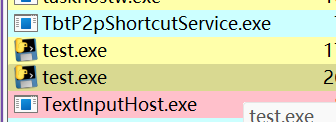

KCTF2024第四题-神秘信号 & PVM注入
跟Nep打KCTF的时候遇上了一个能帮得上忙的题，正好前几天学了一个py逆向的小技巧，现在发挥作用了。
KCTF2024第四题-神秘信号 先解包后反编译main.py：
1 2 3 4 5 6 7 8 9 10 11 12 13 14 15 16 17 18 19 20 21 22 23 import CrackMeprint ('(账号密码由字母大小写、数字、!、空格组成)' )print ('请输入账号：' )input ()if len (z) < 20 :'dZpKdrsiB6cndrGY' + zelse :0 :4 ] + 'dZpK' + z[4 :8 ] + 'drsi' + z[8 :12 ] + 'B6cn' + z[12 :16 ] + 'drGY' + z[16 :]print ('请输入验证码：' )input ()if key == m:print ('Success' )print ('Fail' )continue continue
看得出来核心逻辑在CrackMe的main模块里，
但是直接翻解包出来的文件没有找到CrackMe的踪影。
用上面的方法注入一下代码看一下CrackMe的属性：
1 2 3 4 5 6 7 print ("===============================================" )print (dir (CrackMe))print ("===============================================" )
没有__file__属性，说明可能是一个动态生成的模块，
试试直接dump main：
1 2 3 4 5 print ("===============================================" )print (dir (CrackMe.main.__code__))print ("===============================================" )
有__code__属性，直接dump：
1 2 3 4 5 6 7 8 9 10 11 12 13 14 15 16 17 18 import marshalimport importlibprint ("===============================================" )print (dir (CrackMe.main.__code__))open ("dumped_main.marshal" , "wb" ).write(marshal.dumps(code1))with open ("dumped_main.marshal" , "rb" ) as f:with open ("file_main.pyc" , "wb" ) as f:print ("===============================================" )
成功：
逆一下逻辑：
1 2 3 4 5 6 7 8 9 10 11 12 13 14 15 16 17 18 19 20 21 22 23 24 25 26 27 28 29 30 31 32 33 34 35 36 37 38 39 40 41 42 43 44 45 46 47 48 49 50 51 def encode (data ):'' 0 'ZQ+U7tSBEKVzyf5coCwb94Dd6raT0eLNin12Hp8mOxFuvMgIPlhRY3WjksqJAXG/' b'' for i in data:85 1 , 'little' )for i in range (0 , len (data), 3 ):3 ]'' .join(format (byte, '08b' ) for byte in chunk)for j in range (0 , len (binary_str), 6 ):6 ]if len (six_bits) < 6 :6 - len (six_bits)'0' * (6 - len (six_bits))int (six_bits, 2 )]'!' * (padding // 2 )for i in range (len (encoded_str) // 2 ):2 ]2 + 1 ]2 ] + b + a + encoded_str[i * 2 + 2 :]return encoded_strdef decode (encoded_str ):'ZQ+U7tSBEKVzyf5coCwb94Dd6raT0eLNin12Hp8mOxFuvMgIPlhRY3WjksqJAXG/' list (encoded_str)for i in range (len (decoded_str) // 2 ):2 ]2 + 1 ]2 ], decoded_str[i * 2 + 1 ] = b, a'' .join(decoded_str)'!' )'!' )'' for char in decoded_str:format (base64_chars.index(char), '06b' )if padding:bytearray ()for i in range (0 , len (binary_str), 8 ):8 ]int (byte, 2 ))bytearray ()for byte in decoded_bytes:85 )return original_data
回头看一下，这个encode函数，传入的参数data类型是bytes，但是main.py调用的时候传递的是str，
先模拟一下main中的输入输出，
1 2 3 4 5 6 7 8 9 10 11 12 13 14 15 16 17 18 19 20 21 22 23 24 25 26 27 28 29 30 31 32 33 34 35 36 37 38 39 40 41 42 43 44 45 46 47 48 49 50 51 52 53 54 55 56 57 58 59 60 61 62 63 64 65 def encode (data ):'' 0 'ZQ+U7tSBEKVzyf5coCwb94Dd6raT0eLNin12Hp8mOxFuvMgIPlhRY3WjksqJAXG/' b'' for i in data:85 1 , 'little' )for i in range (0 , len (data), 3 ):3 ]'' .join(format (byte, '08b' ) for byte in chunk)for j in range (0 , len (binary_str), 6 ):6 ]if len (six_bits) < 6 :6 - len (six_bits)'0' * (6 - len (six_bits))int (six_bits, 2 )]'!' * (padding // 2 )for i in range (len (encoded_str) // 2 ):2 ]2 + 1 ]2 ] + b + a + encoded_str[i * 2 + 2 :]return encoded_strdef decode (encoded_str ):'ZQ+U7tSBEKVzyf5coCwb94Dd6raT0eLNin12Hp8mOxFuvMgIPlhRY3WjksqJAXG/' list (encoded_str)for i in range (len (decoded_str) // 2 ):2 ]2 + 1 ]2 ], decoded_str[i * 2 + 1 ] = b, a'' .join(decoded_str)'!' )'!' )'' for char in decoded_str:format (base64_chars.index(char), '06b' )if padding:bytearray ()for i in range (0 , len (binary_str), 8 ):8 ]int (byte, 2 ))bytearray ()for byte in decoded_bytes:85 )return original_datab'D7C4197AF0806891' if len (z) < 20 :'dZpKdrsiB6cndrGY' + zelse :0 :4 ] + 'dZpK' + z[4 :8 ] + 'drsi' + z[8 :12 ] + 'B6cn' + z[12 :16 ] + 'drGY' + z[16 :]print (key)'D7CHel419lo 7AFWor080ld!6891' print (x)
发现给的标准输入输出结果对不起来，
那么在main中还有哪里可能做修改呢？
只能是input()
输出一下input()后的值：
看起来是将可见输入做了一个映射，打印一下映射表：
解密代码：
1 2 3 4 5 6 7 8 9 10 11 12 13 14 15 16 17 18 19 20 21 22 23 24 25 26 27 28 29 30 31 32 33 34 35 36 37 38 39 40 41 42 43 44 45 46 47 48 49 50 51 52 53 54 55 56 57 58 59 60 61 62 63 64 65 66 67 68 69 70 71 72 73 74 75 76 77 78 79 80 81 82 83 def encode (data ):'' 0 'ZQ+U7tSBEKVzyf5coCwb94Dd6raT0eLNin12Hp8mOxFuvMgIPlhRY3WjksqJAXG/' b'' for i in data:85 1 , 'little' )for i in range (0 , len (data), 3 ):3 ]'' .join(format (byte, '08b' ) for byte in chunk)for j in range (0 , len (binary_str), 6 ):6 ]if len (six_bits) < 6 :6 - len (six_bits)'0' * (6 - len (six_bits))int (six_bits, 2 )]'!' * (padding // 2 )for i in range (len (encoded_str) // 2 ):2 ]2 + 1 ]2 ] + b + a + encoded_str[i * 2 + 2 :]return encoded_strdef decode (encoded_str ):'ZQ+U7tSBEKVzyf5coCwb94Dd6raT0eLNin12Hp8mOxFuvMgIPlhRY3WjksqJAXG/' list (encoded_str)for i in range (len (decoded_str) // 2 ):2 ]2 + 1 ]2 ], decoded_str[i * 2 + 1 ] = b, a'' .join(decoded_str)'!' )'!' )'' for char in decoded_str:format (base64_chars.index(char), '06b' )if padding:bytearray ()for i in range (0 , len (binary_str), 8 ):8 ]int (byte, 2 ))bytearray ()for byte in decoded_bytes:85 )return original_data"ABCDEFGHIJKLMNOPQRSTUVWXYZ" b'KJIHGFETSRQPONM<;:98765DCB' .decode('latin1' )"abcdefghijklmnopqrstuvwxyz" b"+*)(\'&%43210/.-\x1c\x1b\x1a\x19\x18\x17\x16\x15$#\"" .decode('latin1' )"0123456789 !" b'\\[ZYXWVUdclk' .decode('latin1' )str .maketrans(a, b)str .maketrans(b, a)"KCTF" 'latin1' ))if len (z) < 20 :'dZpKdrsiB6cndrGY' + zelse :0 :4 ] + 'dZpK' + z[4 :8 ] + 'drsi' + z[8 :12 ] + 'B6cn' + z[12 :16 ] + 'drGY' + z[16 :]print (decode(key))'latin1' )print (flag)
Hello World!KCTF
PVM注入 前置知识 目前来看的python逆向常见题型有：逆pyc和逆pyd；
先说逆pyd，
.pyd 文件是 Windows 平台上的 Python 动态加载模块（Dynamic Load Module）。它与 Linux 和 macOS 平台上的 .so 文件类似，都是用于扩展 Python 的功能的二进制文件。
一般的pyd是用Cython编译出的二进制文件，这东西是基本不可逆的。
逆pyc的类型就比较多了，有直接给pyc的，有打包成exe的，有只给pyc字节码的，这三种本质上没什么区别，毕竟pyc是可以反编译成py文件，难点就在于去花指令和去混淆上。
什么是PVM注入 注入原理 首先要清楚Python代码执行的原理，主要步骤就是CPython把py代码编译成字节码，然后在Python虚拟机（PVM）中执行，
我们先了解一下Python中的GIL：
GIL 是 Python 中的全局解释器锁（Global Interpreter Lock）的缩写。它是 Python 解释器（特别是 CPython 实现）中的一个机制，用于在多线程环境下保护访问 Python 对象的内存管理和执行。
而CPython实际上是有一些执行接口的，我们可以取得GIL后创建线程，就可以在Python虚拟机中执行Python代码了，实现如下：
1 2 3 4 5 Py_SetProgramName (L"main.py" ); PyEval_InitThreads ();PyGILState_Ensure ();PyRun_SimpleString ("print('hello world')" ); PyGILState_Release (s);
对Python虚拟机的注入在github有现成的项目：https://github.com/call-042PE/PyInjector/
他的使用也非常简单，把名为code.py的文件与需要注入的程序放在同一文件夹下即可，code.py的内容就是注入执行的代码。
注入示例 我们写一个简单的test.py：
1 2 3 4 5 6 def print_1 (name ):print ("Hello, " + name + "!" )if __name__ == "__main__" :input ("What is your name?\n" )
用pyinstaller打包成exe并执行：
从PyInjector项目中安装好注入用的dll，再编写一下code.py：
1 print (print_1("hacker" ))
运行test.exe并等待输入，
用Process Hacker找到正在运行的test.exe进程：

注入dll：
选择对应架构的dll：
可以看到成功注入：
pyc字节码dump 我们知道pyc文件实际上就是文件头 + code object，code object就是代码对象，用于表示编译后的字节码的数据结构。
我们可以注入Python虚拟机，然后得到代码对象，就可以得到代码逻辑了。
从Doctor3师傅的博客 中我们知道可以如下dump出exe中的pyc文件：
1 2 3 4 5 6 7 8 9 10 11 12 13 14 15 16 17 18 import sys, marshalimport importlib0 for frame in sys._current_frames().values():open ("dumped" +str (i)+".marshal" , "wb" ).write(marshal.dumps(code)) with open ("dumped" +str (i)+".marshal" , "rb" ) as f:with open ("file" +str (i)+".pyc" , "wb" ) as f:1 print ("Dump finished!" )
原理就是扫描栈帧，然后将栈帧中存在的f_code (code object)以marshal文件的格式dump出来，然后转化为pyc文件。
我们将code.py的内容替换成以上内容再次注入：
查看文件夹，发现多了这几个文件：
marshal文件是用于存储Python对象的序列化表示的文件。可以从marshal文件得到pyc文件。
file0.pyc 是我们 code.py 对应的pyc，我们忽略它，
用pycdc反编译一下file1.pyc：
可以看到反编译出的正是我们的test.py。
注入利用 在遇到一些难以解包的exe或者解包后难以正常反编译pyc时，我们可以通过注入PVM的方式得到代码逻辑，或者对其中的一些函数进行调用，观察输出等。
关于py打包成exe 打包器就是把py编译成pyc，然后连带一些模块和Python虚拟机一起塞进一个exe中。
现在主流的打包方式都是pyinstaller，但是这种打包器已经有了专门的解包器pyinstextractor，
虽然pyinstaller内置有AES的文件加密功能，但是因为pyinstaller是开源的，在运行前一定有对加密文件的解密过程，而密钥和解密流程都在打包的exe中，解包可以得到，所以只起到了一个“威慑作用”，因此，pyinstaller在6.0版本删除了–key参数：Remove the –key/cipher bytecode encryption.
其次还有CX_freeze和py2exe两种打包器，但是这两种打包出的exe甚至都不需要解包器，
CX_freeze：打包后的文件中就有pyc
py2exe：直接解压exe
以上三种打包器都可十分容易地解包，PVM注入的优势并不是很明显
但是我发现另一种nuitka打包器，这个打包器是将py代码转化为c代码然后编译，所以理论上是不存在Python字节码的，也就没法解包，这时候利用PVM注入，我们就可以得到一些敏感数据和函数的信息。
参考链接 Python进程注入 | Hello World
blog.doctor3.net/?p=104